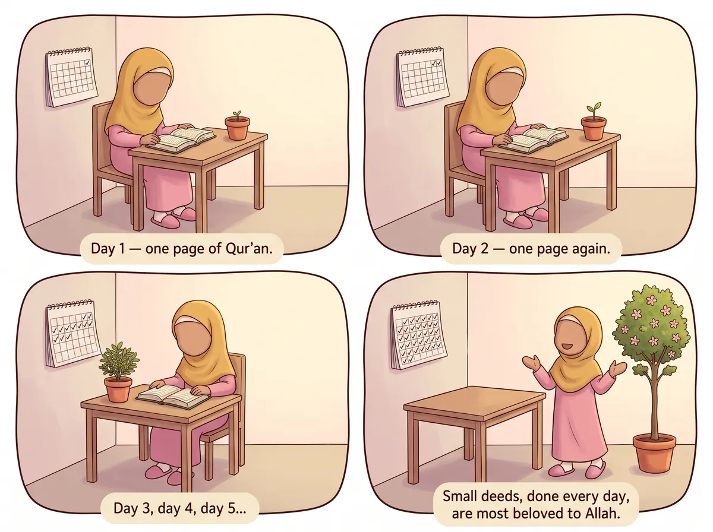
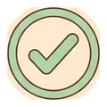
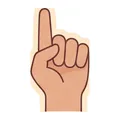
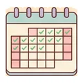
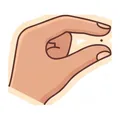
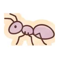

‹ All hadith
Small deeds, done every day

عَنْ عَائِشَةَ رَضِيَ اللَّهُ عَنْهَا، عَنِ النَّبِيِّ ﷺ قَالَ: أَحَبُّ الأَعْمَالِ إِلَى اللَّهِ أَدْوَمُهَا وَإِنْ قَلَّ
Say it with me: Aḥabbu l-a'māli ila-llāhi adwamuhā wa in qall.
“The most beloved of deeds to Allah are those that are most consistent, even if they are small.”
Narrated by Aisha (RA) · Al-Bukhari & Muslim
What does it mean for me?
Allah loves it when you do a good deed every single day, even a tiny one — more than a big deed you do once and then forget. A little drop every day fills the whole bucket!🔤 6 words
tap a card to hear it
🔊
أَحَبُّ
the most loved
🔊

الأَعْمَالِ
of deeds
🔊

إِلَى اللَّهِ
to Allah
🔊

أَدْوَمُهَا
the most regular ones
🔊

وَإِنْ
even if
🔊

قَلَّ
they are small
⭐ Let's try it!
Choose one tiny good deed (like saying Bismillah before eating) and do it every day this week.